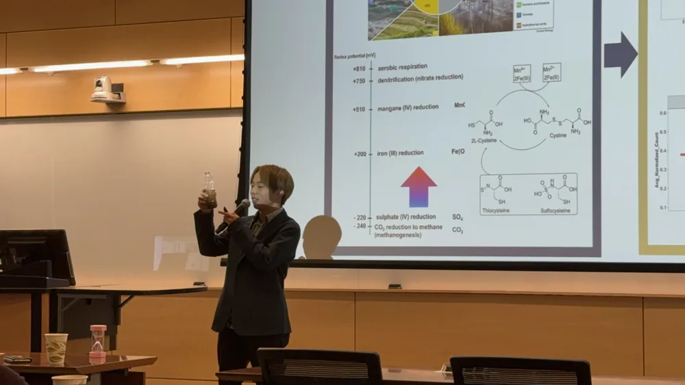

GEORGIA TECH / 2024.08 —
微生物群集のメタゲノム解析
バイオインフォマティクス・環境研究

- 担当・所属研究室
- 客員研究員・DiChristina研究室
- 期間
- 2024.08 —
目的
重金属汚染物質の安定化に関わる微生物群集を解析し、Fe(III)・硫酸塩・pHバッファの添加による影響を調べる。
担当したこと
- Python・R・Linuxを用いてメタゲノムデータを処理。
- 汚染物質の安定化に関与する微生物群集を統計解析。
- 中谷財団の奨学生として2024年8〜9月に現地滞在し、その後リモートで研究。
実施内容・結果
微生物群集の変化を解析し、金属還元に有機硫黄シャトルが関与する可能性を検討。現時点では研究上の仮説です。現地滞在後もリモートで研究を継続しています。
次の研究・開発岩塩中の好塩性古細菌の単離・同定